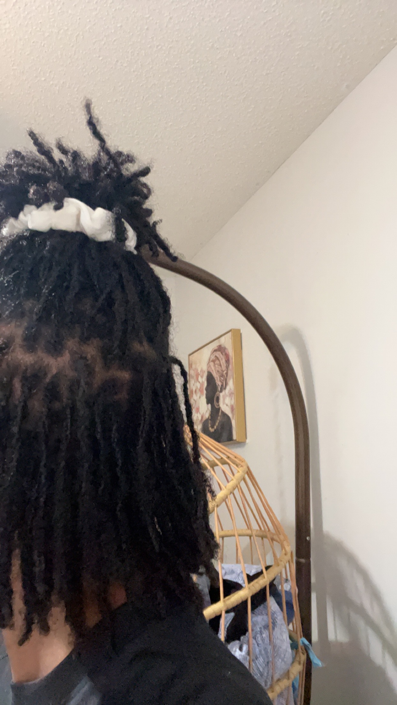

Embrace
Embrace
Which Maintenance Method Is for You?
Whether you've recently started your dreadlock journey or have been rocking them for a while, understanding the proper maintenance methods is important for preserving your dreadlocks' beauty and integrity. Here are some of the most common loc maintenance techniques:
Interlocking
Interlocking is a maintenance method that involves pulling the end of a loc through the root. The process is usually done using a latch-hook or a interlocking tool.PROS
- You will not have to worry about your locs unravelling when washing your hair, exercising or swimming
- A retie generally lasts between 4-8 weeks, but some can go even longer without one
- Ideal for fine-textured hair.
- Improper interlocking can result in scalp tension, holes and loc thinning
- A loc that is interlocked can be more difficult to comb out
- The interlocking process can be time-consuming
Palm-Rolling
Palm rolling is a maintenance method that involves retwisting the loc by rolling it between your palms.PROS
- Results in more round, uniform locs
- Time-efficient
- Less tension than interlocking
- Can unravel after intense physical activities or getting into water
- Can require more product use (mature locs, not so much)
- Palm rolling too frequently can cause loc thinning
Crochet Method
Similar to interlocking, the crochet method is a maintenance method that involves using a crochet needle to create small knots that will form a loc.PROS
- Ideal for instant locs and loc extensions
- No product required
- Results in more mature looking locs
- It can be more diffcult finding a professional who offers crocheting as a maintenance method
- Not as tight as the palm rolling method
- Crocheting too often can damage your ends